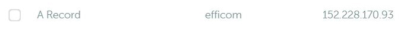

Automatic subdomain registration for containers
Since the migration of my blog and the surrounding infrastructure to docker in 2015 I'm a docker-gen user, thanks to the nginx-proxy stack.
Using nginx, docker-gen and acme-companion it generates reverse proxy configs & manage the creation, renewal and use of SSL certificates for proxied Docker containers.
I always loved it because it really simplified my deployment, and after all these years I wanted to go on step further, and simplify it more, again.
When deploying another docker-compose project the only thing I needed to do manually was the subdomain registration in DNS. Which was annoying me because of how all over the place a virtual lab can be, like, did I already created this entry before ? Did I changed it ? And so on.
So I finally dug into docker-gen and how it works, seeking a way to do it without make it too complex and integrating well in this little ecosystem.
How it works
Unix socket
The docker daemon is listening to /var/run/docker.sock which is docker's UNIX socket. It's the main entry point for Docker API. This is what docker-gen use to be aware of what's going on in our little containerized world.
Using the same technique we will listen to it and its events, enabling us to know when containers are started, stopped and other information about them.
Fortunately we have a python library for the docker engine API, we can use it like this:
#!/usr/local/bin/python3.9
import docker
client = docker.from_env()
events = client.events(decode=True)
for event in events:
if event['Action'] == 'start':
### Do stuff
Simple stuff right ? In this example we listen for container events, and can do stuff whenever one of them start.
We can schematize our goal like this:
- Listen event from the docker's UNIX socket
- When a container is started, check if the needed environment variables are set
- Call the registrar script with these arguments
- Make call to the right registrar's API and update the DNS entries.
I've done it like this:
#!/usr/local/bin/python3.9
import docker
import os
client = docker.from_env()
events = client.events(decode=True)
for event in events:
if event['Action'] == 'start':
container = client.containers.get(event['id'])
container_envs = container.attrs['Config']['Env']
fqdn_list = registrar = external_ip = None
for env in container_envs:
if env.find('VIRTUAL_HOST') > -1:
fqdn_list = env.split("=", 1)[-1]
fqdn_list = fqdn_list.split(',')
if env.find('REGISTRAR') > -1:
registrar = env.split("=", 1)[-1]
if env.find('EXTERNAL_IP') > -1:
external_ip = env.split("=", 1)[-1]
if fqdn_list and registrar and external_ip:
for fqdn in fqdn_list:
os.system(f"cd /usr/src/app && python register.py {fqdn.strip()} {registrar} {external_ip}")
With this method we check, for every starting container, if it contains the environment variables we are waiting:
VIRTUAL_HOST: List of subdomains to registerREGISTRAR: The target registrarEXTERNAL_IP: The target IP to register in ours DNS entries
Registrar API
Python lib
Now that we can read docker events we need to be able to exploit them. Fortunately my registrar have an API available, so this is only a matter of time between it, python and me.
As I only own domains on 1 registrar the project is, for now, only compatible with Namecheap. Feel free to join the project on GitHub or contact me if you want to participate & see more choices available.
So, I forked PyNamecheap which isn't maintained anymore, merged waiting PRs and stripped unnecessary functions to keep it as simple as possible.
Then added my own function to check, compare and update the SLDs from environment arguments:
def check_sld(self, fqdn, target_ip):
sld, tld = fqdn.split(".", 1)
hosts = self.domains_dns_getHosts(tld)
for host in hosts:
if host['Type'] == 'A':
if host['Name'] == sld:
if host['Address'] == target_ip:
print(f"{fqdn} is already registered to {host['Address']}")
return
else:
print(f"{fqdn} is already registered to {host['Address']} instead of {target_ip}, deleting...")
self.domains_dns_delHost(tld, {
"RecordType": "A",
"HostName": sld,
"Address": {host['Address']}
})
self.domains_dns_addHost(tld, {
"RecordType": "A",
"HostName": sld,
"Address": target_ip,
"MXPref": 10, #Default value
"TTL": 1799 #Value for Automatic TTL
})
print(f"{fqdn} is now registered to {target_ip}")
return
Now I have my own module which can be used in the project !
Configuration management
I'm using confuse to manage the configuration files containing the required information to interact with the registrar's API.
In namecheap's case we need:
- account's username
- API key
- whitelisted's IP authorized to use the API key
Put them in a YAML file and call it a day. The final idea of this is to have a conf folder, where we put all ours registrar-name.yml, making possible to work in a multi-registrar environment.
Mix them together
The final registrar script:
#!/usr/local/bin/python3.9
import sys
sys.path.append('./lib')
from namecheap import Api
import confuse
config = confuse.Configuration('subdomain-auto-registrar', __name__)
fqdn = sys.argv[1]
registrar = sys.argv[2]
external_ip = sys.argv[3]
config.set_file(f"conf/{registrar.lower()}.yml")
if registrar.lower() == 'namecheap':
api = Api(config['username'].get(str), config['api_key'].get(str), config['username'].get(str), config['whitelisted_ip'].get(str))
api.check_sld(fqdn, external_ip)
Doing like this we check the registrar name, then we load the correct configuration file and make the right API calls.
Having the registrar's name as an environment variable really help us to make these calls. We can even imagine homemade DNS manager in organization using this for local update, it just needs a dedicated lib with the right API calls, like any other registrar.
To-do:
- Handling bad configuration and trigger an error message when the configuration is missing an element.
- Handling more registrar, having more module or calling already existing ones.
Demonstration
With everything set up we now have to start the listener, and wait for container to trigger the registration's process.
Demo's docker-compose file:
version: '3.1'
services:
web:
image: php:7.4-apache
container_name: efficom_apache_web
restart: always
ports:
- 8082:80
environment:
VIRTUAL_HOST: efficom.magnier.io
VIRTUAL_PORT: 8082
LETSENCRYPT_HOST: efficom.magnier.io
LETSENCRYPT_EMAIL: mycertemail@tld.io
REGISTRAR: namecheap
EXTERNAL_IP: 152.228.170.93
volumes:
- ./content:/var/www/html
networks:
default:
external:
name: nginx-proxy
Once the listener is active your A entry will be automatically updated when a container is started.
After deploying a newly configured env we can see it in our container's log output:
Seconds after the containers are up and running, we can see the new entries on the DNS dashboard:

Final word
This was fun, I'm glad to now have another piece of my personal infrastructure automatized and I hope you find this post instructive.
The project and its source code are available on GitHub. Don't hesitate to contribute to it !